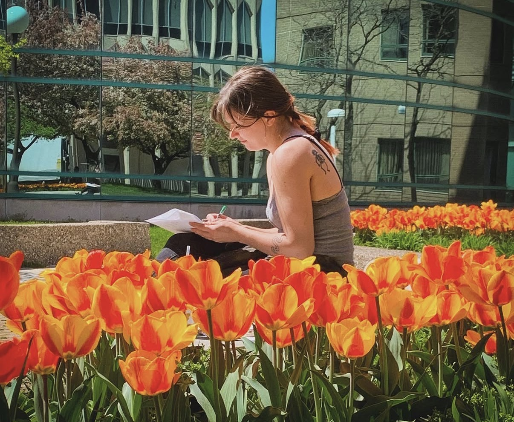
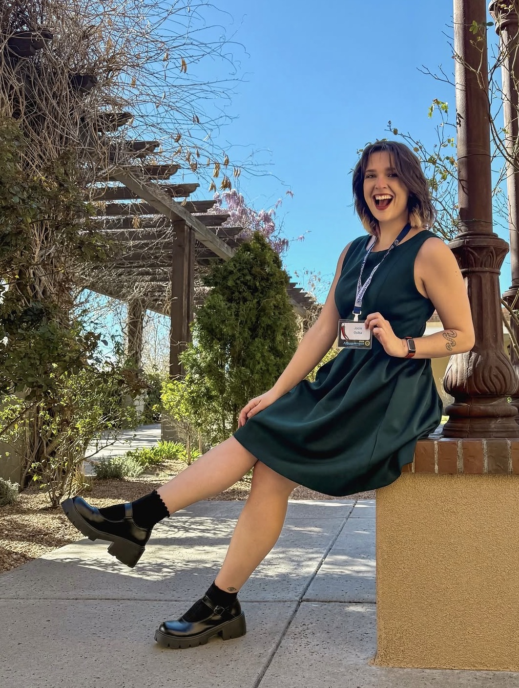
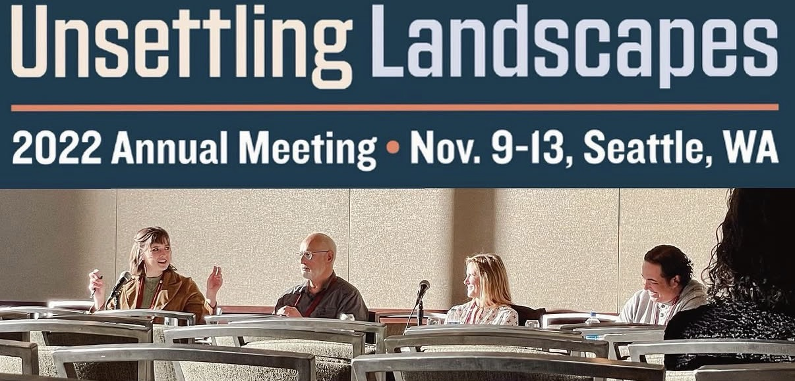
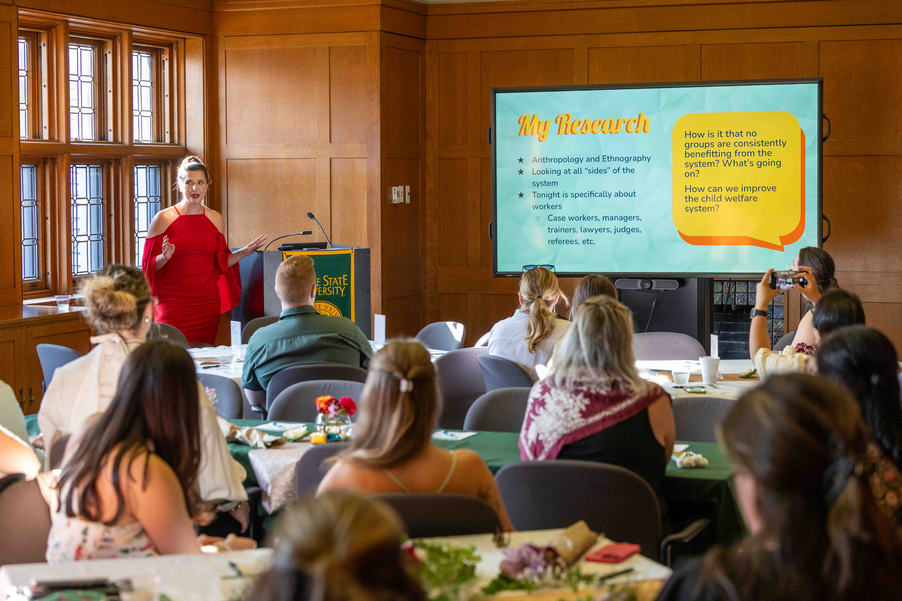

Ph.D. Candidate, Anthropology
ABD and available for hire
jocieosika@wayne.edu

I am excited to be building a consistent, collaborative, and interdisciplinary program of research! Although my main focus is independent, anthropological work on the Michigan child welfare system, I have also done substantial work relating to HIV in Kenya and Michigan and completed a passion project on gyms. I have also been fortunate to be a part of several interdisciplinary collaborations with fields like psychology, social work, gerontology, dentistry, criminology (see Mentorship), and labor studies (see Public Scholarship). Don't forget to check out my Public Scholarship page to learn more about the accessible communication pairings I often partner with my solo projects!
Last Updated: October 20, 2026
| Citation | Access |
|---|---|
| Osika, J. (2026). Standards and Constructs in the Child Welfare Case File: An Anthropological Paperwork Assessment. Families in Society, 10443894261416956. | Families in Society |
| Luborsky, M. R., Ziglor, C., Byrappagari, D., Osika, J., Shay, K., and Jones, J. (2026). “Constructing Self-Rated Oral Health Among Disadvantaged Older African Americans.” Frontiers in Oral Health, 7, 1726866. | Frontiers in Oral Health |
| Osika, J. (In Press 2026). "Social Surveillance for Normative Structure Reinforcement and Resistance at the American Gym." Surveillance & Society. | In Press; Available Upon Request |
| Authors and Title | Target Journal |
|---|---|
| Osika, J. "Care Infrastructure Breakdown and Repair through Child Welfare Workers' Ambivalent Heterotopic Thinking." | Under Revise and Resubmit at Human Organization; Available Upon Request |
| Osika, J., Linn, C., Odhiambo, S. A., Orero, W. O., Owour, J. A., Onyango, E. O., Owour, P. M. "Agency and Temporality in Unconditional Cash Transfers for HIV Risk Reduction among Young Women in Kisumu, Kenya." | Under Revise and Resubmit for PLOS Public Health; Available Upon Request |
| Osika, J. "Participation without Rights: Foster Child Participation in Juvenile, Evidence, and Stakeholder Roles in American Child Welfare Court." | Under Preparation for Child Abuse & Neglect; Available Upon Request |
| Minushi, I., Osika, J., Compton, A., and McGoron, L. "PTSD, Parenting Activities, and Child Health." | TBD |


